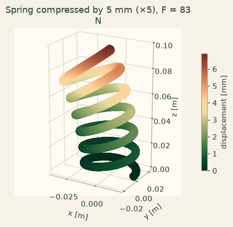
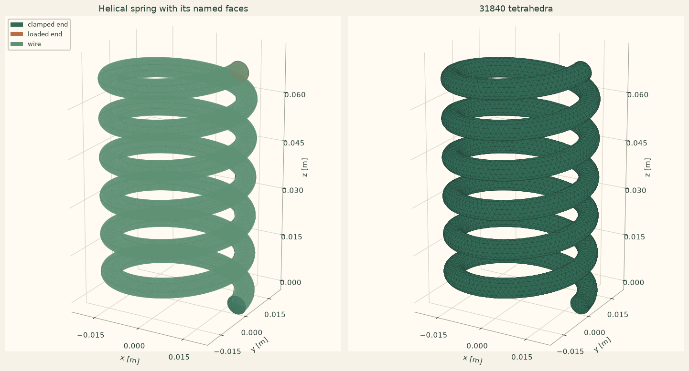

Docs › Examples › Helical spring driven by a global displacement constraint
Structural mechanics · 3D
Helical spring driven by a global displacement constraint
A helical spring is compressed by prescribing the mean axial displacement of its loaded wire end; the force follows from one extra global equation.
Run locally with OneSimulation. The example downloads are free. Running them requires an activated runtime. The current pilot runs on macOS on Apple Silicon with CPython 3.13. Installation and activation · View pilot plans. Scope of the reference checks.

What it computes
OneSimulation reads the swept-wire spring from a STEP file, meshes it with quadratic tetrahedra and adds an average-displacement constraint on the loaded end face to 3D linear elasticity; its Lagrange multiplier is the axial force. An independent beam model of the helix and the classical spring formula are computed for comparison. The script that builds the STEP file comes with the notebook.
What it checks
The mean end displacement is met (5.004 mm against 5 mm from a simple sample mean), the force 83.12 N balances the clamped-end reaction, and the stiffness 16.63 N/mm agrees with the beam model of the helix within 0.1 % once the faceting of the round wire by the mesh is accounted for (6.4 % without).
Geometry
The notebook starts at the import of the CAD file loaded_spring_global_constraint.step: STEP (AP242), readable by any CAD program, with the names of the faces that the boundary conditions use. Put it next to the notebook.

The geometry script
The script loaded_spring_global_constraint_geometry.py builds the geometry with the CAD objects of OneSimulation and writes the file. Change a dimension there, run it, and run the notebook again.
"""Geometry of the OneSimulation example "Helical spring driven by a global displacement constraint".
Builds a helical compression spring (wire diameter 6 mm, mean coil diameter 40 mm, pitch 12 mm, six
turns, axis along z) as a circle swept along a helix with the CAD objects of OneSimulation, names
the two wire end faces and the wire surface, and writes loaded_spring_global_constraint.step.
"""
from onesim.cad.d2 import Profile
from onesim.cad.d3 import Helix, Sweep
spring = Sweep(
profile=Profile.circle(0.003), path=Helix(radius=0.020, pitch=0.012, turns=6)
)
spring = spring.grouped(
fixed_end=spring.select(
faces=lambda face: face.kind == "plane" and face.center[2] < 0.036
),
loaded_end=spring.select(
faces=lambda face: face.kind == "plane" and face.center[2] > 0.036
),
wire=spring.select(faces=lambda face: face.kind != "plane"),
)
spring.save("loaded_spring_global_constraint.step")The notebook
The complete notebook, cell by cell. Run it to produce the figures and the comparison printout.
Often the quantity that is known is not a load but a kinematic condition: a spring has to be compressed by a given amount, a bolt stretched to a given length. The force needed for it then follows from the solution. A global equation adds one unknown and one equation to the model,
the area-weighted mean axial displacement of the boundary \(\Gamma\) equals \(\delta\). Its Lagrange multiplier is a uniform axial traction on \(\Gamma\), and its resultant is the force \(F\) that holds the constraint.
Setup. A spring of steel wire, \(d=6\) mm, mean coil diameter \(D=40\) mm, pitch 12 mm, six turns; \(E=206\) GPa, \(\nu=0.3\). One wire end is clamped; at the other the mean axial displacement is \(\delta=5\) mm and all else is free. The spring comes from the CAD file loaded_spring_global_constraint.step, written by loaded_spring_global_constraint_geometry.py with the CAD objects of OneSimulation.
| face | condition | |---|---| | fixed_end | clamped | | loaded_end | mean axial displacement \(\delta\) (global equation) | | wire | free |
Reference. (1) An independent model of the same spring: 3D Euler-Bernoulli beam elements along the helix of the wire centre line, clamped at the start and loaded by an axial force at the end, which bends and twists the wire exactly as the solid does. (2) The classical formula for a close- coiled spring loaded along its axis, \(k=Gd^4/(8D^3n)\) with \(n=6\) turns (Wahl, Mechanical Springs, 1963), which assumes the force on the spring axis; here it acts at the wire end, so the two models are compared with each other and the formula gives the order of magnitude.
import numpy as np
from onesim.cad.exchange import load
from onesim.materials import IsotropicSolid
from onesim.meshing import TetrahedralMesher
from onesim.numerics import Numerics
from onesim.numerics.fem import FiniteElement, Lagrange
from onesim.numerics.linear import SparseDirect
from onesim.physics.solid_mechanics import (
AverageDisplacement,
FixedDisplacement,
FrameMember,
LinearElasticity,
SpatialFrame,
TractionFree,
average_displacement_force,
)
from onesim.simulation import Problem, Simulation
from onesim.visualization import plots, theme
theme.set()Geometry and mesh
load returns the spring with its named faces; tetrahedra of 3 mm carry quadratic shape functions.
spring = load("loaded_spring_global_constraint.step")
faces = spring.boundaries
mesh = TetrahedralMesher(target_size=0.003).generate(spring)
view = plots.Camera(elevation=20, azimuth=-60)
fig = plots.figure(1, 2, size=(13, 7))
plots.geometry(
spring,
selection={
"clamped end": faces.fixed_end,
"loaded end": faces.loaded_end,
"wire": faces.wire,
},
labels=False,
camera=view,
title="Helical spring with its named faces",
ax=fig[0],
)
plots.mesh(
mesh,
groups=("all",),
legend=False,
camera=view,
title=f"{mesh.cell_count} tetrahedra",
ax=fig[1],
)
plots.show()Model with the global equation
AverageDisplacement adds the mean-displacement equation to the problem; after the solve, average_displacement_force returns its multiplier as the axial force on the loaded end.
youngs_modulus, poisson_ratio, wire, coil, pitch, turns, stroke = (
206e9,
0.3,
0.006,
0.040,
0.012,
6,
0.005,
)
steel = IsotropicSolid(
density=7850.0,
specific_heat_capacity=460.0,
thermal_conductivity=50.0,
youngs_modulus=youngs_modulus,
poisson_ratio=poisson_ratio,
thermal_expansion_coefficient=12e-6,
)
model = LinearElasticity(domain=spring.volume, material=steel)
problem = Problem(
name="Spring with a global equation",
geometry=spring,
physics=(model,),
boundary_conditions=(
FixedDisplacement(
boundary=faces.fixed_end, physics=model, value=(0.0, 0.0, 0.0)
),
TractionFree(boundary=faces.wire | faces.loaded_end, physics=model),
),
constraints=(
AverageDisplacement(
boundary=faces.loaded_end, physics=model, component="z", value=stroke
),
),
)
result = Simulation(
problem=problem,
mesh=mesh,
numerics=Numerics(
spatial=FiniteElement(element=Lagrange(order=2)), linear_solver=SparseDirect()
),
).solve_stationary()
force = average_displacement_force(result, model)
displacement = result.field(model.displacement)Beam model of the same helix
36 beam elements per turn along the wire centre line, with the circular wire section.
angles = np.linspace(0.0, 2 * np.pi * turns, 36 * turns + 1)
centre_line = np.column_stack(
(coil / 2 * np.cos(angles), coil / 2 * np.sin(angles), pitch * angles / (2 * np.pi))
)
section = dict(
youngs_modulus=youngs_modulus,
area=np.pi * wire**2 / 4,
bending_inertia_y=np.pi * wire**4 / 64,
bending_inertia_z=np.pi * wire**4 / 64,
torsion_constant=np.pi * wire**4 / 32,
shear_modulus=youngs_modulus / (2 * (1 + poisson_ratio)),
)
helix = SpatialFrame(
joints=centre_line,
members=tuple(
FrameMember(
name=f"wire {k}", start=k, end=k + 1, local_y=(0.0, 0.0, 1.0), **section
)
for k in range(len(angles) - 1)
),
)
beam = helix.solve(
supports=[(0, dof, 0.0) for dof in ("x", "y", "z", "rx", "ry", "rz")],
forces={len(angles) - 1: (0.0, 0.0, 1.0)},
)Comparison
The constraint is checked on the end face, the force against the clamped end, and the stiffness against the beam model and the classical formula. Straight tetrahedra cut off a little of the round wire; its torsion and bending constants scale with the square of the section area, which explains the difference to the beam model.
end_points = displacement.sample(along=faces.loaded_end, subdivisions=2)
reaction = displacement.reaction(faces.fixed_end)
stiffness = {
"solid with global equation": force / stroke,
"beam model of the helix": 1.0 / beam.displacement[-1, 2],
"classical formula G d⁴/(8 D³ n)": section["shear_modulus"]
* wire**4
/ (8 * coil**3 * turns),
}
print(
f"mean axial displacement of the loaded end {1e3 * np.mean(end_points.values[:, 2]):.4f} mm (prescribed {1e3 * stroke:.4f} mm, simple mean of samples)"
)
print(
f"force of the global equation {force:.2f} N; axial reaction at the clamped end {reaction[2]:.2f} N"
)
for name, value in stiffness.items():
print(
f"stiffness, {name:32s} {value / 1e3:8.3f} N/mm ({100 * (value / stiffness['beam model of the helix'] - 1):+6.2f} % against the beam model)"
)
corners = np.asarray(mesh.coordinates)[np.asarray(mesh.cells)[:, :4]]
mesh_volume = (
np.abs(
np.einsum(
"ij,ij->i",
np.cross(corners[:, 1] - corners[:, 0], corners[:, 2] - corners[:, 0]),
corners[:, 3] - corners[:, 0],
)
).sum()
/ 6
)
faceting = mesh_volume / (np.pi * wire**2 / 4 * turns * np.hypot(np.pi * coil, pitch))
print(
f"the straight tetrahedra facet the wire: its section is {100 * faceting:.2f} % of the circle; with the torsion and bending constants scaled "
f"by its square the beam model gives {faceting**2 * stiffness['beam model of the helix'] / 1e3:.3f} N/mm "
f"(solid {100 * (stiffness['solid with global equation'] / (faceting**2 * stiffness['beam model of the helix']) - 1):+.2f} %)"
)
print(
f"lateral motion of the loaded end: {1e3 * np.abs(end_points.values[:, :2]).max():.3f} mm in the solid, "
f"{1e3 * np.abs(beam.displacement[-1, :2]).max() * force:.3f} mm in the beam model"
)Figure
The deformed spring, 5 times enlarged, coloured by the displacement magnitude.
plots.surface(
displacement,
component=lambda u, position: 1e3 * np.linalg.norm(u, axis=1),
deformation=displacement,
deformation_scale=5.0,
camera=view,
label="displacement [mm]",
title=f"Spring compressed by {1e3 * stroke:.0f} mm (×5), F = {force:.0f} N",
)
plots.show()Going further
Replace the constraint value by a function of time to follow a stroke history, prescribe the mean rotation instead, or add ground end coils and plates to load the spring on its axis.